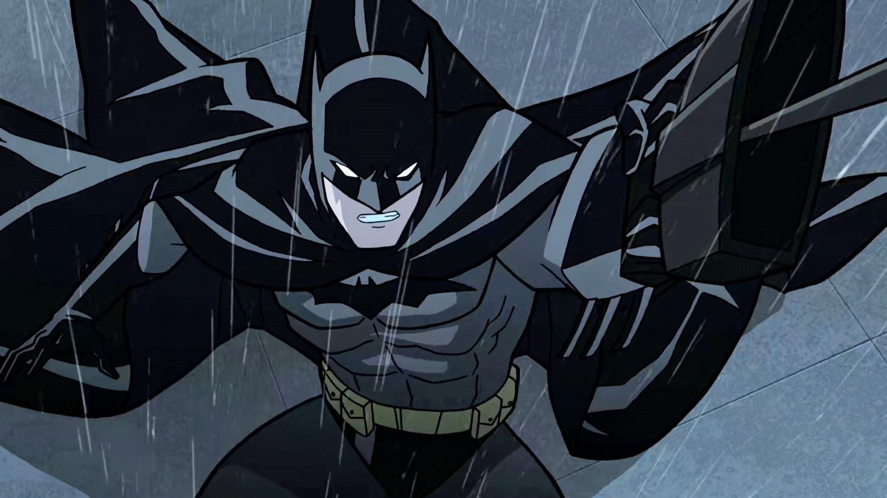

KISAH BATMAN
Bruce Wayne yang diperankan oleh Christian Bale adalah anak dari pasangan Thomas dan Martha Wayne.
Thomas merupakan pendiri dari perusahaan yang bergerak di
bidang industrial bernama Wayne Enterprises.
Ketika kecil, Bruce terjatuh ke dalam sungai yang kering dan diserang oleh sekelompok kelelawar.
Hal itu menyebabkan Bruce mempunyai ketakutan tersendiri akan kelelawar.
Pada saat menonton pertunjukkan opera bersama kedua orang tuanya,
Bruce ketakutan karena salah satu penampil menggunakan kostum kelelawar.
Oleh sebab itu, Bruce meminta kepada kedua orang tuanya untuk pulang.
Ketika keluar dari gedung, seseorang bernama Joe Chill merampok keluarga Wayne kemudian membunuh kedua orang tua Bruce. Bruce menjadi yatim piatu dan diasuh oleh pengurus keluarga Wayne, Alfred Pennyworth. Empat belas tahun kemudian, Chill mendapatkan keputusan bebas bersyarat setelah bersaksi melawan qembong mafia, Carmine Falcone. Bruce yang datang ke pengadilan mencoba menghabisi Chill tapi anak buah Falcone yang berhasil terlebih dahulu membunuh Chill. Rachel Dawes, teman masa kecil Bruce marah karena Bruce bertindak di luar hukum. Dia mengatakan bahwa tindakan Bruce itu dapat membuat malu nama keluarga Wayne.
Bruce menemui Falcone. Falcone mengatakan bahwa kekuatan yang besar datang dari rasa ketakutan. Bruce pun meninggalkan Gotham selama tujuh tahun untuk melatih dirinya bela diri dan menyelami dunia kriminal bawah tanah. Di penjara Bhutan, dia bertemu Henri Ducard yang mengajaknya bergabung dalam sebuah organisasi bernama League of Shadows pimpinan Ra's al Ghul. Bruce masuk ke dalam League of Shadows dan mendapat pelatihan bela diri. Dia kemudian mengetahui bahwa League of Shadows menargetkan kota kelahirannya, Gotham, yang dianggap nggak bisa lagi diselamatkan.
Bruce menolak anggapan itu. Dia juga nggak suka dengan cara kelompok itu dalam menegakkan keadilan, menurutnya cara itu terlalu radikal. Bruce bertarung dengan Ducard hingga Ducard tewas tertimpa reruntuhan. Dia kemudian membakar kuil tempatnya belajar bela diri sekaligus markas League of Shadows. Bruce kembali ke Gotham dengan tujuan membasmi kejahatan. sssssssttttttt.....